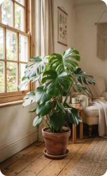

مونستيرا ديلسيوسا
نبتة القفص الصدري • غرفة المعيشة
منبهات ذكية، إرشادات رعاية، واستشارات فورية مصممة خصيصاً لنباتاتك في أي وقت ومن أي مكان.
منصتك الشاملة لكل ما تحتاجه نباتاتك المنزلية، بدقة وسهولة واحترافية عالية
سجل رقمي متكامل لكل نبتة لديك يشمل تاريخ الري، نوع التربة، موقع الأصيص، ومتابعة دورية لتطور نموها خطوة بخطوة.
جداول ري ديناميكية تتكيف مع الفصول، حجم الأصيص، ورطوبة الغرفة لتجنب تعفن الجذور وحماية النبتة من العطش.
التقط صورة لأي ورقة صفراء أو بقع بنية وتعرّف فوراً على السبب المباشر مع خطوات علاجية واضحة ومجربة.
إشعارات ذكية في الوقت الأنسب لري وتسميد وتقليم نباتاتك، بدون إزعاج متكرر وبحسب احتياج كل نبتة الفعلي.
فريق من خبراء النباتات الداخلية مستعد للإجابة على استفساراتك وتوجيهك لإنقاذ النباتات المعرضة للذبول.
مكتبة معرفية غنية بنصائح عملية ومقالات مبسطة تمكنك من فهم لغة النباتات والعناية بها بثقة وهدوء بال.
شاشة تجمع كل معلومات نباتاتك وجدولتها في واجهة واحدة بسيطة وسلسة

لا توجد قاعدة واحدة تناسب كل النباتات. في عناية نقوم بمطابقة احتياجات كل نبتة بحسب بيئتها الفعلية، موقعها من الشمس، وحجم الأصيص داخل منزلك.
اختر العَرَض الذي تلاحظه على أوراق نبتتك وتعرف على التشخيص العلمي والحل المناسب
عندما تفرط في الري أو عند انسداد ثقوب التصريف، تحرم الجذور من الأكسجين وتبدأ الأوراق القديمة والسفلية بالاصفرار التدريجي.
شاهد الفارق بين روتين العناية التقليدي القائم على التخمين، والمنهج العلمي الدقيق مع عناية
| الخاصية | مع عناية | بدون عناية (الأسلوب التقليدي) |
|---|---|---|
| جدول السقاية | ديناميكي يتكيف مع فصول السنة وسرعة جفاف التربة | يوم ثابت أسبوعياً يؤدي لتعفن الجذور أو عطشها |
| تشخيص المشكلات | فوري بالذكاء الاصطناعي مع خطوات علاجية علمية | بحث عشوائي وتجارب خاطئة تزيد من تدهور النبتة |
| التذكيرات والمتابعة | تنبيهات دقيقة في الوقت المناسب مع سجل نمو مصور | الاعتماد على الذاكرة ونسيان مواعيد التسميد والري |
| اختيار وتوزيع النباتات | ترشيحات دقيقة تتطابق مع بيئة منزلك وخبرتك الشخصية | شراء نباتات لا تناسب إضاءة الغرفة وموتها سريعاً |
خطط مرنة تناسب المبتدئين وهواة اقتناء المجموعات النباتية المنزلية الكبيرة
مثالي للبدء وتجربة العناية الذكية بالنباتات
لعشاق النباتات الراغبين في رعاية مثالية واحترافية
أفضل قيمة سنوية مع راحة بال كاملة على مدار العام
إليك إجابات واضحة ومباشرة عن أكثر الاستفسارات شيوعاً حول خدمات عناية
نعم بالتأكيد! يمكنك التقاط صورة للنبتة أو إدخال اسمها وسيقوم نظام عناية بالتعرف عليها تلقائياً وتحديد جدول الري ومستوى الإضاءة الموصى بهما.
يعتمد التشخيص على نموذج ذكاء اصطناعي مدرب على مئات الآلاف من صور النباتات وأعراض الإصابات الفطرية والحشرية ومشاكل الري، ليقدم لك تشخيصاً سريعاً مع خطوات وقائية وعلاجية دقيقة.
لا، تطبيق عناية لا يتطلب أي أجهزة خارجية. نحسب الاحتياج الدقيق بناءً على معطيات نبتتك وموقعها والطقس المحلي في مدينتك.
نعم، في باقات Pro يمكنك فتح محادثة مباشرة مع أخصائي نباتات داخلية لمساعدتك في علاج الحالات المستعصية خطوة بخطوة.
ابدأ رحلتك اليوم وحافظ على حيوية ونضارة نباتاتك بأسهل الخطوات وبكل ثقة.
ابدأ الآن